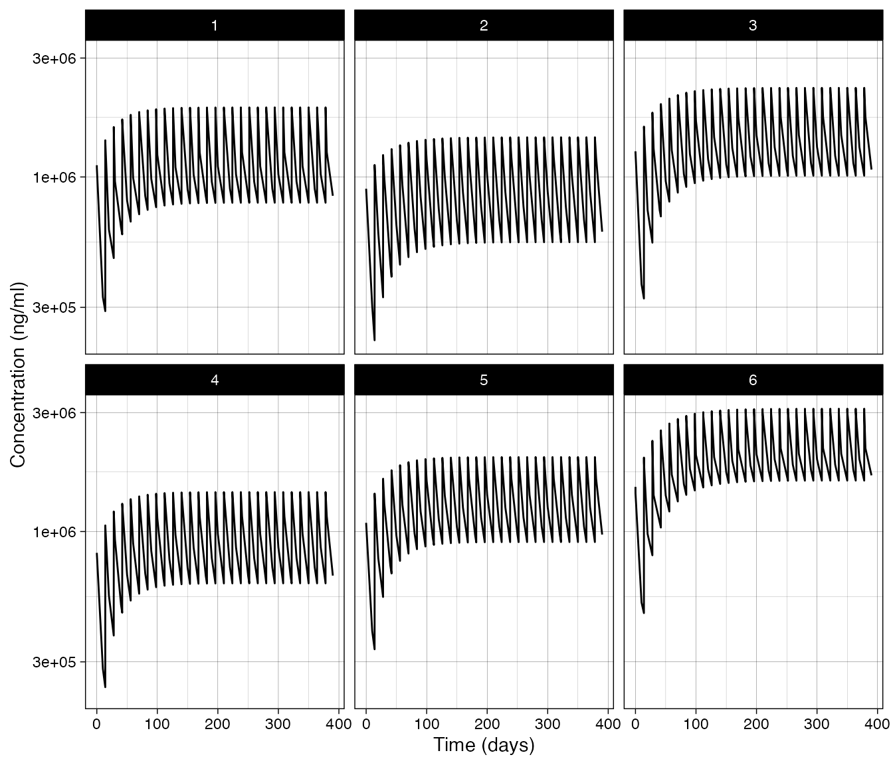
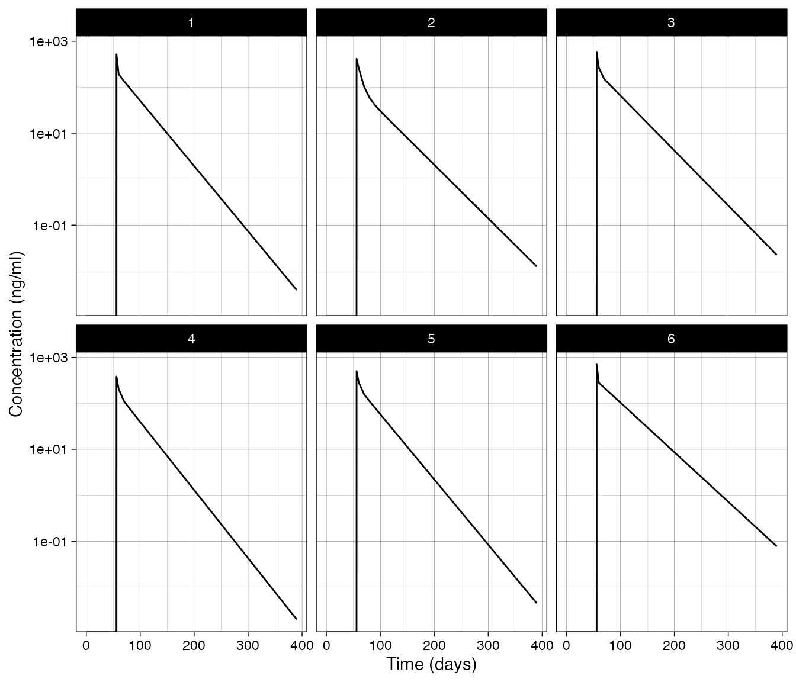

Clinical Trial Simulation
Source:vignettes/clinical_trial_simulation.Rmd
clinical_trial_simulation.RmdNOTE: This module is currently under active development and this documentation is a work in progress
Introduction
Normally when we want to simulate a patients response we define a regimen and just simulate forward to a specified point in time. This works well for compounds that are relatively safe, the PK is consistent over time, and for which the drug concentrations required to achieve efficacy are consistent. In fact these restrictions apply to many different compounds. However, there are many scenarios where it is necessary to adjust dosing based on periodic clinical visits: compounds with a narrow therapeutic index, disease progression which alters the drug PK or requires increases in the dose amount, etc. While it is possible to do this manually with the current simulation tools provided, this section outlines a generalized framework to make this easier for the users.
Overview
The underlying simulations are run using rxode2, and as
such we need an rxode2 system object. From that we can
either simulate subjects or load them from a file. Next we need to
define a set of rules. These will be a set of conditions and actions. At
each evaluation time point the conditions are evaluated. When a
condition is met the actions associated with that condition are
executed. For example, if during a visit (an evaluation time point) the
trough PK is below a certain level (condition) we may want to increase
the dosing regimen for the next dosing cycle (action).
Creating subjects
Subjects are expected in a data frame with the following column headers:
-
idIndividual subject id - Names of parameters and iiv as specified in the
inisection of therxode2function specification - Names of covariates used in the model.
mk_subjects() — Creates subjects for simulation sampling
based on between-subject variability and generating covariate
information based on user specifications.
Covariates
The covs input is a list with the following
structure:
- type: Can be either “fixed”, “discrete”, or “continuous”.
- sampling: This field is only needed for a “continuous” covariate ’ type and can be either “random”, “normal” or “log-normal”.
- values: This field depends on the type and optional sampling above.
- fixed: A single value.
- discrete: A vector of possible discrete elements.
- continuous, random: Two values the first is the lower bound and the second is the upper bound.
- continuous, normal: Two values the first is the mean and the second is the variance.
- continuous, log-normal: Two values the first is the mean and the second is the variance.
This examples shows the SEX_ID randomly sampled from the
values specified, SUBTYPE_ID fixed at a value, and
WT sampled from a log-normal distribution.
Rule-based simulations
simulate_rules() — This will run simulations based on
the rule definitions below.
Rules
Rules are a named list where the list name can be a short descriptive label used to remember what the rule does. These names will be returned as columns in the simulated data frame.
-
condition: Character string that evaluates to eitherTRUEorFALSE. When true theactionportion will be triggered. For a list of objects available see the Rule-evaluation environment below. -
fail_flag: Flag set in therule_idcolumn when the condition is not met (set to"false"if not specified). -
true_flag: Flag set in therule_idcolumn when the condition is met (set to"true"if not specified). -
action: This is what the rule will trigger can be any of the following:-
type: This defines the action type and can be either"dose","set state", or"manual".
-
Based on the type the action field will
expect different elements.
Dosing:
-
action-
type:"dose" -
values: Character string that evaluates as a numeric vector dosing amounts (e.g."c(3, 3, 3, 3)") -
times: Character string that evaluates as a numeric vector of times (e.g."c(0, 14, 28, 42)") -
durations: Character string that evaluates as a numeric vector of durations (e.g."c(0, 0, 0, 0)", zero for bolus dosing)
-
Changing a state value:
-
action-
type:"set state" -
state: Character string with the name of the state to set ("Ac") -
value: Character string that evaluates as a numeric value for state (e.g."Ac/2"would set the state to half the value of Ac at the evaluation point)
-
Manual modification of the simulation:
-
action-
type:"manual" -
code: Character string of code to evaluate.
-
Rule-evaluation environment
Beyond simple simulations it will be necessary to execute actions
based on the current or previous state of the system. For this reason,
when a condition or elements of the action (e.g., the
values, times and durations of a
dose action type) are being evaluated, the following objects will be
available at each evaluation point:
- states: The value of each named state or compartment.
- covariates: The value of each named covariate.
- subject-level parameters: The value of each named parameter.
- rule value: The last value the rule evaluated as.
-
SI_SUB_HISTORY: A data frame of the simulation history of the current subject up to the current evaluation point. -
SI_subjects: The subjects data frame. -
SI_eval_times: Vector of the evaluation times. -
SI_interval_ev: The events table in it’s current state for the given simulation interval. -
SI_ev_history: This is the history of the event table containing all the events leading up to the current interval. -
SI_ud_history: This is a free form object the user can define within the “manual”action type.
Example: Fixed dosing
To explore this framework a simple system describing antibody PK
driving a change in a biomarker through an indirect response will be
used. The timescale of this model is days and the system is shown at the
bottom if you want to look through it. You can also find it in the
{rumiante} package here:
system.file(package="ruminate", "test_apps", "test_rxode2_system.R")Creating the rxode2 object
If you source the example file above it will create the function
my_model. We can then we convert it into an
rxode2 object:
source(system.file(package="ruminate", "test_apps", "test_rxode2_system.R"))
object = rxode2(my_model)Defining subjects
The first thing you want to do is create subjects. You can do this
using the interindividual variability in the system. For systems where
there are covariates you will need to define those. In this example
there are three covariates that are needed. This list will create those
by sampling SEX_ID randomly from a discrete distribution,
fixing the SUBTYPE_ID at 0, and sampling the
WT from a log-normal distribution.
covs = list(
SEX_ID = list(type = "discrete",
values = c(0,1)),
SUBTYPE_ID = list(type = "fixed",
values = c(0)),
WT = list(type = "continuous",
sampling = "log-normal",
values = c(70, .15))
)
set.seed(8675309)
rxode2::rxSetSeed(8675309)
subs = mk_subjects(object = object,
nsub = 6,
covs = covs)## id TV_F1 TV_ka TV_CL TV_Vc TV_Vp TV_Q TV_MW TV_BM_IC
## 1 1 0.744 0.282 -1.609438 1.283708 1.011601 -0.2916901 140 1000
## 2 2 0.744 0.282 -1.609438 1.283708 1.011601 -0.2916901 140 1000
## 3 3 0.744 0.282 -1.609438 1.283708 1.011601 -0.2916901 140 1000
## 4 4 0.744 0.282 -1.609438 1.283708 1.011601 -0.2916901 140 1000
## 5 5 0.744 0.282 -1.609438 1.283708 1.011601 -0.2916901 140 1000
## 6 6 0.744 0.282 -1.609438 1.283708 1.011601 -0.2916901 140 1000
## TV_kdeg_BM TV_Emax TV_EC50 prop_err add_err ETAka ETACL
## 1 0.1 100 300 0.1 0.1 -0.03371416 -0.02451377
## 2 0.1 100 300 0.1 0.1 0.37997267 0.33124229
## 3 0.1 100 300 0.1 0.1 0.86558332 0.14897580
## 4 0.1 100 300 0.1 0.1 0.75521056 0.38110234
## 5 0.1 100 300 0.1 0.1 0.35349066 -0.02408425
## 6 0.1 100 300 0.1 0.1 0.11710076 0.59958468
## ETAVc ETAVp ETAQ ETABM_IC ETAEmax SEX_ID SUBTYPE_ID
## 1 -0.2765150 0.1013156387 0.9685465 -0.24754131 0.3562707 1 0
## 2 0.3737573 -0.0008168809 0.4543914 -0.21078801 -0.1613900 0 0
## 3 -0.3441780 0.3355860130 1.5798467 -0.02070583 0.3015755 0 0
## 4 0.7486529 -0.0743538884 1.6395929 -0.22854815 -0.4129045 1 0
## 5 0.2337110 0.1312583433 0.8211781 -0.23959614 -0.2885427 0 0
## 6 0.5468173 0.3696771719 0.4755260 0.28711738 -0.2705375 1 0
## WT
## 1 73.95983
## 2 59.15108
## 3 63.22713
## 4 71.12438
## 5 60.45595
## 6 60.20936Creating rules
The rules are a named list. The list names are arbitrary
and should be used for you to track what is going on. Each of these are
a list with two required elements. A condition and an
action. The condition is should be character string that
when evaluated results in either TRUE or
FALSE. The action should be a list and have a
type and other list elements based on that
type. Shown below is the "dose" type of
action:
rules = list(
low_dose = list(
condition = "TRUE",
true_value = "3mg",
false_value = "0",
action = list(
type = "dose",
state = "Ac",
values = "c(3, 3, 3, 3)*1e6/MW",
times = "c(0, 14, 28, 42)",
durations = "c(0, 0, 0, 0)")
)
)You can optionally add a true_value and a
false_value that will be stored in the simulated output to
indicate the evaluation status of the condition. When setting a dose
type you need to also provide elements for values,
times, and durations. These are all character
objects that can be evaluated to provide vectors. It’s important to note
the following when providing a dose type of action:
- The lengths of these should be equal.
- Times are relative to the evaluation time point.
Evaluation times
With the subjects and rules defined we need to define the timepoints where the rules will be evaluated. In this case we are considering 7 cycles (0 to 6) of 8 weeks (2*28) each.
eval_times = (0:6)*28*2Running simulations
This will define the output times we want for the simulation. Note
that the last evlation point is on day 336 (6*2*8), so we
follow the timecourse out for one more cycle to day 392
(7*2*8).
output_times = seq(0, 7*28*2, 10)If we want to pass any options to rxode2 we can do that
by creating a named list with the option name and value paired
together:
rx_options = list(
covsInterpolation = "locf",
addCov=TRUE
)Lastly all of these can be passed to
simulate_rules():
simres =
simulate_rules(object = object,
subjects = subs[["subjects"]],
eval_times = eval_times,
output_times = output_times,
rules = rules,
rx_options = rx_options)
Example Resetting states
The action type "set state" can be used to arbitrarily
set the value of any state in the system. Below we are setting the
central compartment to a value of 10 at time zero. Then at time 56 we
increase the value in the peripheral compartment Cp by a
factor of 5.
rules = list(
reset_Ac = list(
condition = "time == 0",
true_flag = "Ac set",
false_flag = "",
action = list(
type = "set state",
state = "Ac",
value = "10")
),
reset_Cp = list(
condition = "time == 56",
true_flag = "Cp set",
false_flag = "",
action = list(
type = "set state",
state = "Cp",
value = "Cp*5")
)
)
simres =
simulate_rules(object = object,
subjects = subs[["subjects"]],
eval_times = eval_times,
output_times = output_times,
rules = rules,
rx_options = rx_options)Example: Manual code evaluation
If you find you need to do something more complicated you can include
functions in the preamble and use those functions in the methods above.
Alternatively you can create your own code and use the
"manual" rule type to modify the event table using the
objects in the rule evaluation environment above. In the code below we
are simply setting a state for the current subject id to a value.
code="
SI_interval_ev = etRbind(SI_interval_ev,
et(cmt = 'Ac',
id = id,
amt = 10,
evid = 4,
time = time))"
rules = list(
manual_example = list(
condition = "time == 56",
true_flag = "manual",
false_flag = "",
action = list(
type = "manual",
code = code
)
)
)
simres =
simulate_rules(object = object,
subjects = subs[["subjects"]],
eval_times = eval_times,
output_times = output_times,
rules = rules,
rx_options = rx_options)
Example: Titrated dosing of a biomarker
The examples before this demonstrate the mechanics of how to perform
rule-based simualtions. This example should provide a more concrete
demonstration of how to use these elements together. Here we want to
titrate dosing until a biomarker is within a range. Once in that range
we want to maintain that dose. The first rule is only active at time 0
and it will initialize dosing at 0.1 mg. The remaining rules will only
be active after the first dose at time 0 if the biomarker is below the
range (ss_dose_increase ), above the range
(ss_dose_decrease), or in the range
(ss_dose_keep). These each use the simulation internal
function SI_fpd to fetch the previous dose and select the
new dose as a fraction of the previous. If you need to you can create
your own functions to use in the action fields. You just need to create
a character string with the function definitions and pass those as the
preamble input to simulate_rules().
rules = list(
first_cycle = list(
condition = "time == 0",
true_flag = "first cycle",
false_flag = "",
action = list(
type = "dose",
state = "Ac",
values = "c(0.1, 0.1, 0.1, 0.1)*1e6/MW",
times = "c(0, 14, 28, 42)",
durations = "c(0, 0, 0, 0)")
) ,
ss_dose_keep = list(
condition = "((BM <= 7e4) & (BM >=5e4)) & (time > 0)",
true_flag = "keep last",
false_flag = "",
action = list(
type = "dose",
state = "Ac",
values = "c( 1.0, 1.00, 1.00, 1.00)*SI_fpd(id=id, state='Ac')",
times = "c(0, 14, 28, 42)",
durations = "c(0, 0, 0, 0)")
) ,
ss_dose_decrease = list(
condition = "(BM > 7e4) & (time > 0)",
true_flag = "titrate down",
false_flag = "",
action = list(
type = "dose",
state = "Ac",
values = "c( .90, .90, .90, .90)*SI_fpd(id=id, state='Ac')",
times = "c(0, 14, 28, 42)",
durations = "c(0, 0, 0, 0)")
) ,
ss_dose_increase = list(
condition = "(BM < 5e4) & (time > 0)",
true_flag = "titrate up",
false_flag = "",
action = list(
type = "dose",
state = "Ac",
values = "c(1.30, 1.30, 1.30, 1.30)*SI_fpd(id=id, state='Ac')",
times = "c(0, 14, 28, 42)",
durations = "c(0, 0, 0, 0)")
)
)
simres =
simulate_rules(object = object,
subjects = subs[["subjects"]],
eval_times = eval_times,
output_times = output_times,
rules = rules,
rx_options = rx_options)Antibody-PK and biomarker system
# Dosing into Ac and At is in nmoles. So to dose 3 mg you would use 3e6/MW
my_model <- function() {
ini({
# Typical Value of System Parameters
TV_F1 = fixed(c(.Machine$double.eps, 0.744, .Machine$double.xmax))
TV_ka = c(.Machine$double.eps, 0.282, .Machine$double.xmax)
TV_CL = log(c(.Machine$double.eps, 0.200, .Machine$double.xmax))
TV_Vc = log(c(.Machine$double.eps, 3.61, .Machine$double.xmax))
TV_Vp = log(c(.Machine$double.eps, 2.75, .Machine$double.xmax))
TV_Q = log(c(.Machine$double.eps, 0.747, .Machine$double.xmax))
TV_MW = fixed(c(.Machine$double.eps, 140, .Machine$double.xmax))
TV_BM_IC = c(.Machine$double.eps, 1000, .Machine$double.xmax)
TV_kdeg_BM = fixed(c(.Machine$double.eps, 0.1, .Machine$double.xmax))
TV_Emax = c(.Machine$double.eps, 100.0, .Machine$double.xmax)
TV_EC50 = fixed(c(.Machine$double.eps, 300, .Machine$double.xmax))
# Between-subject variability:
ETAka + ETACL + ETAVc + ETAVp + ETAQ + ETABM_IC + ETAEmax ~
c(0.416,
0, 0.09875,
0, 0.0786, 0.116,
0, 0.0619, 0.0377, 0.0789,
0, 0, 0, 0, 0.699,
0, 0, 0, 0, 0, 0.05,
0, 0, 0, 0, 0, 0, 0.10)
# Error model parameters
prop_err = c(.Machine$double.eps, 0.1, .Machine$double.xmax)
add_err = c(.Machine$double.eps, 0.1, .Machine$double.xmax)
})
model({
# System Parameters
F1 = TV_F1
ka = TV_ka*exp(ETAka)
CL = exp(TV_CL)*exp(ETACL)
Vc = exp(TV_Vc)*exp(ETAVc)
# AMTIFY:Cc
Cc = Ac/(Vc)
Vp = exp(TV_Vp)*exp(ETAVp)
Q = exp(TV_Q)*exp(ETAQ)
MW = TV_MW
BM_IC = TV_BM_IC*exp(ETABM_IC)
kdeg_BM = TV_kdeg_BM
Emax = TV_Emax*exp(ETAEmax)
EC50 = TV_EC50
Dinf = 0.0
# Static Secondary Parameters
WTTV = 70
CL_IND = CL*(1.0+SEX_ID*.1)*(1.0+SUBTYPE_ID*.1)
kel = CL_IND/Vc*((WT/WTTV))^(-0.35)
kcp = Q/Vc*((WT/WTTV))^(-0.35)
kpc = Q/Vp*((WT/WTTV))^(-0.35)
ksyn_BM = kdeg_BM*BM_IC
# Dynamic Secondary Parameters
STIM = 1.0+ Emax*Cc/(EC50+Cc)
# Defining ODEs
d/dt(At) = (-ka*At)
d/dt(Ac) = ((ka*At*F1/Vc -kel*Cc - kcp*Cc + kpc*Cp*Vp/Vc + Dinf/Vc))*Vc
d/dt(Cp) = (kcp*Cc*Vc/Vp - kpc*Cp)
d/dt(BM) = ksyn_BM*STIM-(kdeg_BM*BM)
# Outputs and error models
C_ng_ml = Cc*MW
C_ng_ml ~ add(add_err) + prop(prop_err)
})
}